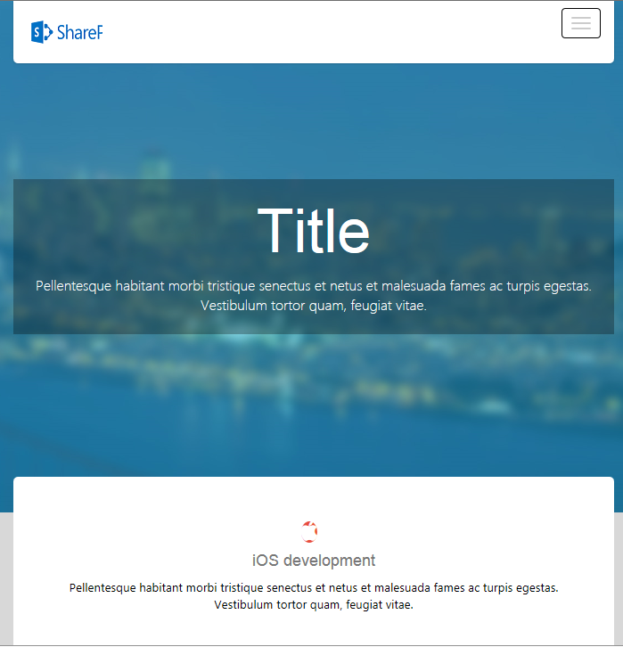

SharePoint Responsive Master Page
Introduction
In My last article, I've given a responsive master page which can be used for all SharePoint application with some basic bootstrap designs.
In this article, you will find a master page with better design. By using this master page you can change the appearance of your SharePoint site to HTML5 website.
Lets try this!!
Description
You can now disable all the unwanted content place holder from the user and make your application as a responsive with bootstrap.
Creating Master Page
Step:1
Download the Responsive Master Page Template.zip here.
Step:2
Go to your site collection and navigate to Site Settings
Step: 3
(Make sure you have enabled the publishing future in site collection level)
Select the Master pages and page layouts option under Galleries
Step: 4
Extract the downloaded zip file and copy
Responsive Master Page Template->MasterPage->ResponsiveMaster and upload the folder under the master page list
(Make sure you have uploaded the “ResponsiveMaster” folder. Inside the masterpage folder, one master file will be there)
Step: 5
Click All Site Content link from Quick Launch pane. (Site Collection Level)
Step: 6
Select Style Library list to upload the css and js styles
Step: 7
Extract the downloaded zip file and copy
Responsive Master Page Template->StyleLibrary->ResponsiveMaster and upload it under the Style Library list
(Make sure you have uploaded the “ResponsiveMaster” folder. Inside the "StyleLibrary" folder- CSS fonts, images, js sub folders will be there.)
Step: 8
Check In all the uploaded files and folders and approve it.
Now your responsive Master page is ready.
Note: Don’t set this master page as your default master. It will replace your V4.master as in your sub site level.
You can make it as a custom master page from the designer and change the master page url in the aspx page from ~masterurl/default.master to ~masterurl/custom.master
Please follow the below steps to apply this master page for individual site pages. (Better apply this master page for user level pages)
--Creating Site Page with Responsive Master Page
Step: 1
Create a site under the above site collection.
Step: 2
Extract the downloaded zip file and copy
Responsive Master Page Template->SitePage -> ResponsivePageTemplate.aspx and use this template for your site pages.
Step: 3
Create your own responsive content under “contentplaceholdermain” and publish it.
Step: 4
The center banner is placed in master page and We have a content place holder to update the text inside the banner. You can change it in your all the aspx pages.
Desktop View:
In desktop view you will get "logo.png" as a lengthy size logo (Change the logo file in images folder)

Mobile/Tablet View:
In Mobile/Tablet view you will get "logo-small.png" as a small size logo/ icon (Change the logo-small file in images folder)

Mobile/Tablet View: Menu

Set Master page file Url like below to inherit the above responsive master page
<%@ Page language="C#" MasterPageFile=../../_catalogs/masterpage/ResponsiveMaster/ ResponsiveMaster.master meta:progid="SharePoint.WebPartPage.Document" inherits="" %>
<%@ Page language="C#" MasterPageFile=../../_catalogs/masterpage/ResponsiveMaster/ ResponsiveMaster.master meta:progid="SharePoint.WebPartPage.Document" inherits="" %>
Or you can set the masterpage as your custom master page and change the master URL like the below
<%@ Page language="C#" MasterPageFile=~masterurl/custom.master meta:progid="SharePoint.WebPartPage.Document" inherits="" %>
<%@ Page language="C#" MasterPageFile=~masterurl/custom.master meta:progid="SharePoint.WebPartPage.Document" inherits="" %>
<asp:Content ID="Content5" ContentPlaceHolderId="bannerText" runat="server"> <h1>Title </h1> <p class="lead">Pellentesque habitant morbi tristique senectus et netus et malesuada fames ac turpis egestas. Vestibulum tortor quam, feugiat vitae.</p> </asp:Content>
<asp:Content ID="Content5" ContentPlaceHolderId="bannerText" runat="server"> <h1>Title </h1> <p class="lead">Pellentesque habitant morbi tristique senectus et netus et malesuada fames ac turpis egestas. Vestibulum tortor quam, feugiat vitae.</p> </asp:Content>
<asp:Content ID="Content6" ContentPlaceHolderId="PlaceHolderPageTitle" runat="server"> Responsive Page - Custom Title </asp:Content>
<asp:Content ID="Content6" ContentPlaceHolderId="PlaceHolderPageTitle" runat="server"> Responsive Page - Custom Title </asp:Content>
Thats It!!
No need to code anything. Just follow above procedure and your responsive sharepoint master page will be ready in 5 mins.
Please let me know, if you guys have any queries.
Reach me out through https://code.msdn.microsoft.com/sharepoint/SharePoint-Responsive-Page-fca1264d/https://www.linkedin.com/in/sasisprite